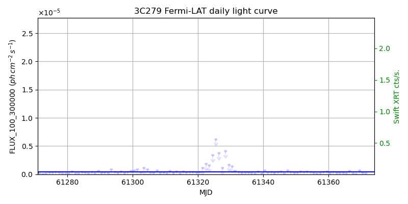
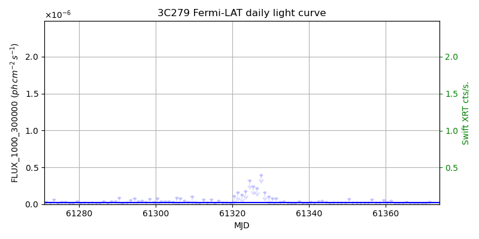

LAT Lightcurve site: https://fermi.gsfc.nasa.gov/ssc/data/access/lat/msl_lc/source/3C_279
Swift site: https://www.swift.psu.edu/monitoring/source.php?source=3C279
NED: Query
Time of last update of this page: UT: 2026-11-28 16:25 (MJD: 61372.684)
| Property | Value |
|---|---|
| R.A. | 12:56:11.28 |
| Dec. | -5:47:20.4 |
| z | 0.536 |
| 3FGL SpectrumType | LogParabola |
| 3FGL PL Index | |
| 3FGL Flux_100_300000 | 4.56e-07 1 / (s cm2) |
| 3FGL Flux_1000_300000 | 2.40e-08 1 / (s cm2) |
| 3FGL Flux >200 GeV | 7.16e-12 1 / (s cm2) |
| 3FGL Extrap. Crab >200 GeV | 0.03 |
| 3FGL Flux After EBL Absorption >200GeV | 1.08e-12 1 / (s cm2) |
| 3FGL EBL Crab Fraction >200GeV | 0.00 |

| MJD | dMJD | Flux | dFlux | Frac3FGL | FracCrab>200GeV | EBLFracCrab>200GeV |
|---|---|---|---|---|---|---|
| 61367.50 | 0.50 | 1.44e-07 | 0.00e+00 | 0.00 | 0.00 | 0.00 |
| 61368.50 | 0.50 | 1.03e-07 | 0.00e+00 | 0.00 | 0.00 | 0.00 |
| 61369.50 | 0.50 | 7.15e-07 | 0.00e+00 | 0.00 | 0.00 | 0.00 |
| 61370.50 | 0.50 | 2.11e-07 | 0.00e+00 | 0.00 | 0.00 | 0.00 |
| 61371.50 | 0.50 | 1.78e-07 | 0.00e+00 | 0.00 | 0.00 | 0.00 |
| MJD | dMJD | Flux | dFlux | Frac3FGL | FracCrab>200GeV | EBLFracCrab>200GeV |
|---|---|---|---|---|---|---|
| 61335.50 | 3.50 | 1.45e-07 | 0.00e+00 | 0.00 | 0.00 | 0.00 |
| 61342.50 | 3.50 | 2.26e-07 | 0.00e+00 | 0.00 | 0.00 | 0.00 |
| 61349.50 | 3.50 | 1.68e-07 | 0.00e+00 | 0.00 | 0.00 | 0.00 |
| 61356.50 | 3.50 | 1.85e-07 | 0.00e+00 | 0.00 | 0.00 | 0.00 |
| 61363.50 | 3.50 | 1.63e-07 | 0.00e+00 | 0.00 | 0.00 | 0.00 |

| MJD | dMJD | Flux | dFlux | Frac3FGL | FracCrab>200GeV | EBLFracCrab>200GeV |
|---|---|---|---|---|---|---|
| 61367.50 | 0.50 | 1.43e-08 | 0.00e+00 | 0.00 | 0.00 | 0.00 |
| 61368.50 | 0.50 | 1.34e-08 | 0.00e+00 | 0.00 | 0.00 | 0.00 |
| 61369.50 | 0.50 | 1.61e-08 | 0.00e+00 | 0.00 | 0.00 | 0.00 |
| 61370.50 | 0.50 | 1.32e-08 | 0.00e+00 | 0.00 | 0.00 | 0.00 |
| 61371.50 | 0.50 | 3.10e-08 | 0.00e+00 | 0.00 | 0.00 | 0.00 |

| MJD | dMJD | Flux | dFlux | Frac3FGL | FracCrab>200GeV | EBLFracCrab>200GeV |
|---|---|---|---|---|---|---|
| 61335.50 | 3.50 | 5.44e-09 | 0.00e+00 | 0.00 | 0.00 | 0.00 |
| 61342.50 | 3.50 | 4.88e-09 | 0.00e+00 | 0.00 | 0.00 | 0.00 |
| 61349.50 | 3.50 | 9.46e-09 | 0.00e+00 | 0.00 | 0.00 | 0.00 |
| 61356.50 | 3.50 | 1.03e-08 | 0.00e+00 | 0.00 | 0.00 | 0.00 |
| 61363.50 | 3.50 | 5.14e-09 | 0.00e+00 | 0.00 | 0.00 | 0.00 |
--------------------------------------------------------- Using user-supplied coords: 12:56:11.28 -5:47:20.4 2000 --------------------------------------------------------- FLWO UT night of: 2026-11-29 Local Sid. @ Midnight: 04:08 Sunset (-15.0) (local, UT): 18:31 01:31 Sunrise (-15.0) (local, UT): 05:53 12:53 Moonrise (local, UT): 21:57 04:57 Moonset (local, UT): Moon phase: 0.72 --------------------------------------------------------- AzTime LSID UT Obj_el Obj_az Mn_el Mn_az Sep. --------------------------------------------------------- 18:31 22:39 01:31 -48.7 301.2 -32.9 32.1 66.4 19:01 23:09 02:01 -53.9 309.8 -29.4 38.9 66.1 19:31 23:39 02:31 -58.4 320.6 -25.4 45.0 65.7 20:01 00:09 03:01 -61.9 333.9 -21.0 50.6 65.3 20:31 00:39 03:31 -63.9 349.8 -16.2 55.6 65.0 21:01 01:09 04:01 -64.1 6.9 -11.1 60.2 64.6 21:31 01:39 04:31 -62.4 23.2 -5.4 64.5 64.3 22:01 02:09 05:01 -59.2 37.1 0.4 68.5 64.0 22:31 02:39 05:31 -54.9 48.3 5.8 72.2 63.7 23:01 03:10 06:01 -49.8 57.3 11.6 75.8 63.4 23:31 03:40 06:31 -44.2 64.5 17.5 79.4 63.1 00:01 04:10 07:01 -38.2 70.6 23.6 82.9 62.8 00:31 04:40 07:31 -32.1 75.9 29.7 86.5 62.6 01:01 05:10 08:01 -25.8 80.6 35.8 90.3 62.4 01:31 05:40 08:31 -19.5 84.9 42.0 94.4 62.1 02:01 06:10 09:01 -13.1 88.9 48.1 99.1 61.9 02:31 06:40 09:31 -6.6 92.9 54.2 104.7 61.7 03:01 07:10 10:01 0.2 96.8 60.1 111.7 61.5 03:31 07:40 10:31 6.1 100.8 65.6 121.1 61.3 04:01 08:10 11:01 12.3 105.0 70.5 134.7 61.1 04:31 08:40 11:31 18.4 109.4 74.0 154.7 60.9 05:01 09:11 12:01 24.3 114.3 75.2 181.1 60.7 05:31 09:41 12:31 30.0 119.8 73.6 206.8 60.5 05:53 10:02 12:53 33.9 124.1 71.0 221.2 60.4 --------------------------------------------------------- Source never above horizon of 55.0 deg. Dark hours >55 deg.: 0.00